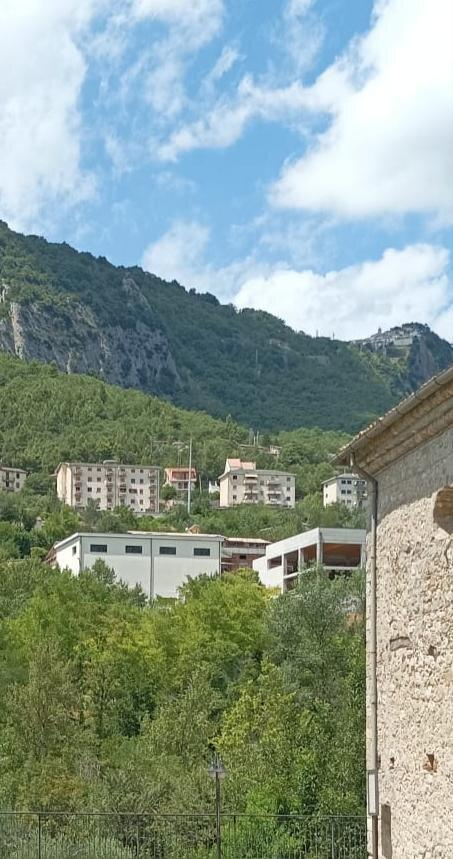
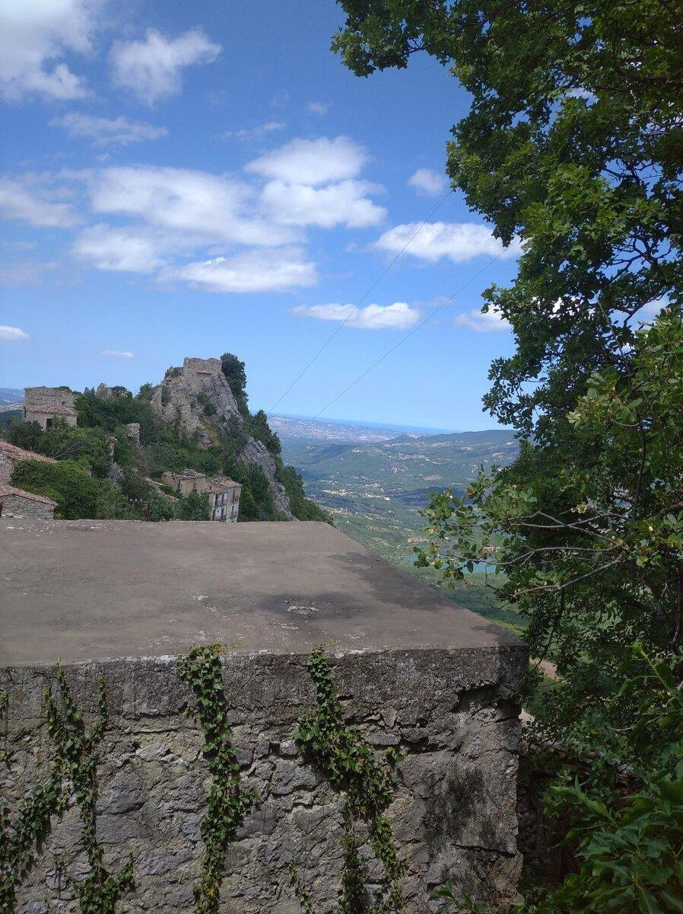
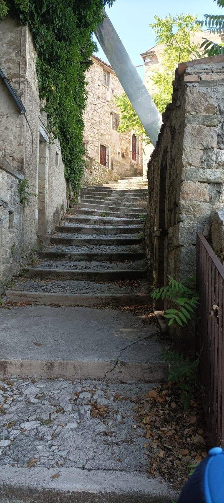
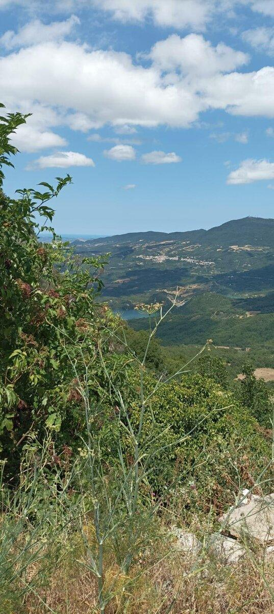
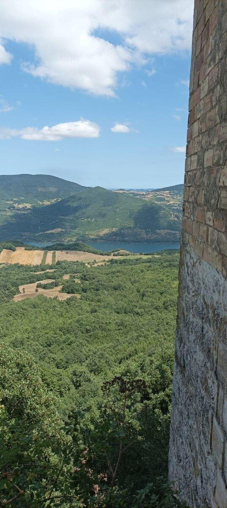
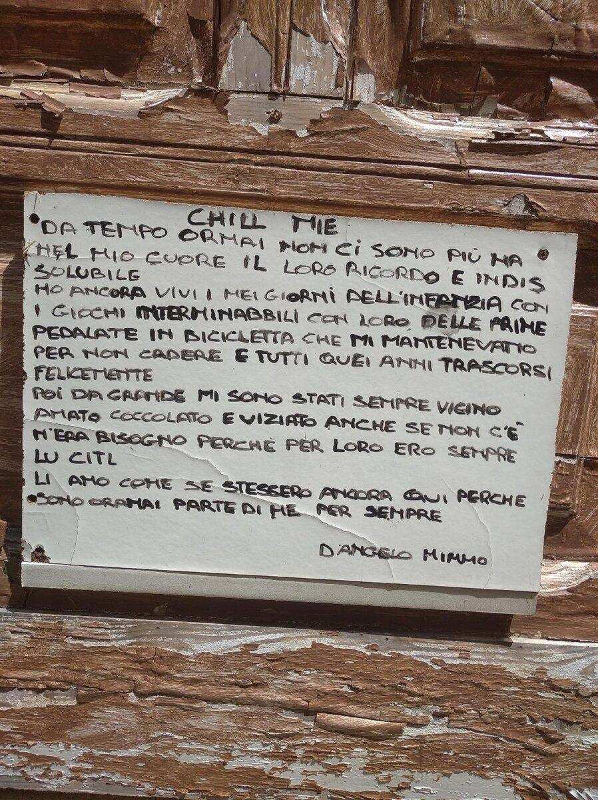
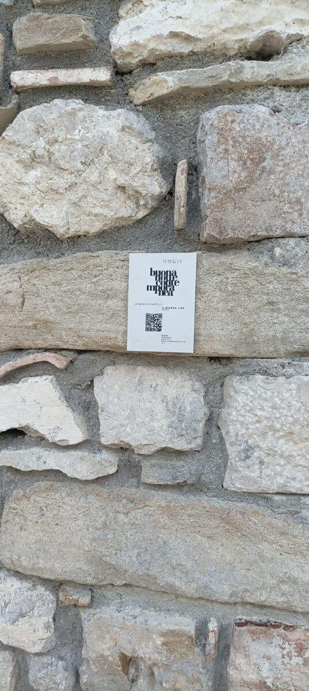
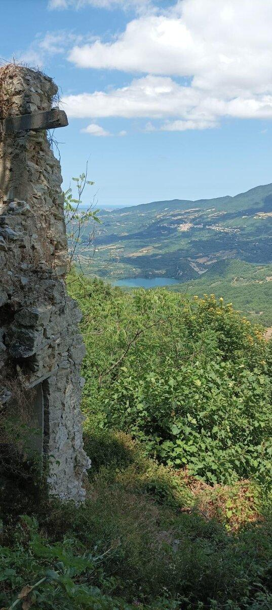

Summer diary · Val di Sangro, Abruzzo
I spent a week this summer in the Val di Sangro. I didn't plan anything in particular — I just let the valley decide where to take me. And it took me somewhere I wasn't expecting.
The valley sits between the mountains of the Majella and the Adriatic coast. Both are close enough to reach in a morning — which means you never feel trapped. You feel held. The air is different here. The pace is different. I ate well, I slept well, I walked without counting steps.

The road up to Buonanotte. It takes a while — but it's worth every metre.
One of those days I visited Roccascalegna — a medieval castle perched dramatically on a rocky spur above the Val di Sangro, founded in the twelfth century. The guide's storytelling made the stones come alive: history you don't just hear, you feel in your chest. We took some beautiful photos up on those walls. Afterwards we ate at a nearby restaurant — simple and careful, the kind of place that takes quiet pride in every detail without making a fuss about it.
Then, almost by accident, we found it.
It wasn't on any list. There was no sign pointing to it. We just took a road that seemed to go nowhere, and there it was — Buonanotte. The ancient heart of what is now called Montebello sul Sangro, in the province of Chieti, sitting at 810 metres on the ridge of Monte Vecchio above the Val di Sangro. A village that emptied out slowly: a landslide in the 1960s, an earthquake in 1949, and then the long quiet exodus until the last person left and the silence moved in to stay. Today it is technically part of Montebello sul Sangro — but the old village, the real one, belongs only to itself.

The church, still standing on the rock. Some things refuse to fall.
The road to get there takes a while. But the moment you arrive, you understand why it was worth it. We stepped out of the car and the silence hit us immediately — not an empty silence, but a full one. The kind that has weight. Nature here doesn't just grow around the ruins, it embraces them. Almost suffocatingly. Vines through windows, grass pushing between stones, trees reclaiming what used to be floors.
Every step felt like a small ritual. We walked slowly, without talking much. There's a kind of respect that comes over you in places like this, without anyone asking for it.
I closed my eyes and tried to imagine the people who had lived there. Love stories. Disappointments. The smell of dinner. Children running down these same stone steps.

The stone steps. Still there, still waiting.

The sea, the Lago di Bomba, and the green that covers everything.

The Lago di Bomba and the Val di Sangro, seen from above.
From up there, the view opens up completely. You can see the valley of the Sangro river, the Lago di Bomba glinting far below, and the mountains stretching in every direction. The air is clean and still. The whole landscape breathes.
At some point, from far away, I heard a small radio playing. For a moment I thought — the village was still alive. But I was wrong. I found out later that a little radio had been left running on purpose, playing music continuously, to keep the village company. I found that unbearably tender.
And then there were the verses. Someone had displayed the poems of a local poet — Dangelo Mimmo — written in the simplest of language, but with a depth that catches you off guard. He wrote about family, about grandparents, about the stories of the past that travel with us whether we want them to or not. I read them slowly, more than once.
Unspoken stories are the greatest loss there is. I would give anything to go back, sit next to my grandfather, and give him one more minute. Maybe I was too young then to know how to listen.
Time moves in cycles. The past returns — in a ruined wall, in a verse written by someone long gone, in a little radio that still plays for an empty village. These things are not nothing. They are everything.
I will come back to Buonanotte. I already know.

The verses of Dangelo Mimmo, displayed on the wall. Simple words, deep roots.

Scan the QR code on the sign to read the full history of the village.

The valley of the Sangro, the Lago di Bomba, and the mountains of Abruzzo.
Ghost Villages — №1 · Greenwingo · Montebello sul Sangro, Chieti